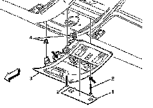

Interior - Removal and Installation Of Roof Console
INFORMATIONBulletin No.: 09-08-49-013A
Date: August 01, 2011
Subject: Proper Removal and Installation of Roof Console for any Related Service Repairs
Models:
2007-2012 Cadillac Escalade, Escalade ESV, Escalade EXT
2007-2012 Chevrolet Avalanche, Silverado, Suburban, Tahoe
2007-2012 GMC Sierra, Sierra Denali, Yukon, Yukon Denali, Yukon XL, Yukon Denali XL
Supercede:
This bulletin is being revised to add model years and update the purpose statement. Please discard Corporate Bulletin Number 09-08-49-013 (Section 08 - Body and Accessories).
The purpose of this bulletin is to provide detail regarding the proper removal and installation of the roof console for any related service repairs. This overhead console is most often serviced when connecting the optional roof beacon wiring. Following the steps outlined below will help eliminate the likelihood of damage being done to the console and/or bracket.
Remove the roof console following the steps below:

1. Remove the roof console dome and reading lamp lens (1).
2. Remove the two roof console screws (2).
Caution
Do not exert downward force at the forward or rearward edge of the roof console assembly as irreversible damage will occur.
3. Grasp the right and left sides of the roof console assembly (3) (where indicated with arrows above) and pull downward using equal force on each side in order to release the retaining clips (4) securing the console assembly to the headlining assembly.
4. Disconnect the electrical connectors.
Reinstall the roof console reversing the steps of the removal procedure. When inserting the roof console retaining clips to the headlining assembly, be sure to push upward in the same locations noted by the arrows in the illustration above.

Disclaimer